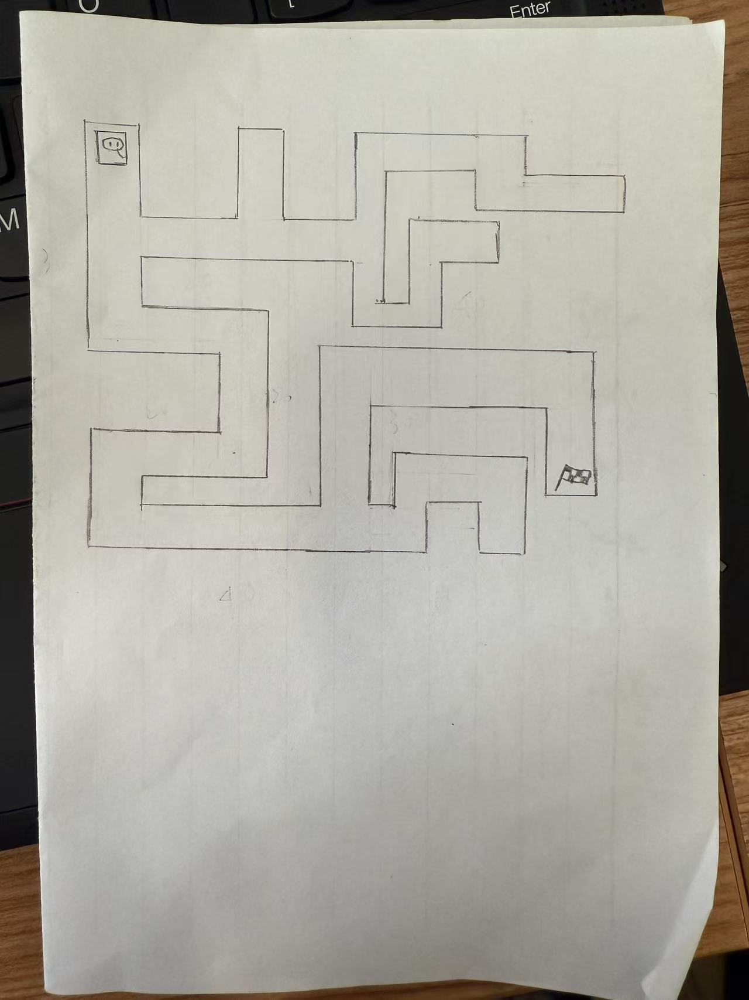

Group MIC and repository
Huang Yiwen, Yang Yuxin, Zhou Xingyu
github.com/202321138004/MIC
Maze Image
Pseudocode
PROGRAM MazeNavigator GO FORWARDS 30 cm TURN LEFT 90 degrees GO FORWARDS 20 cm TURN RIGHT 90 degrees GO FORWARDS 20 cm TURN RIGHT 90 degrees GO FORWARDS 20 cm TURN LEFT 90 degrees GO FORWARDS 10 cm TURN LEFT 90 degrees GO FORWARDS 40 cm TURN LEFT 90 degrees GO FORWARDS 30 cm TURN RIGHT 90 degrees GO FORWARDS 40 cm TURN RIGHT 90 degrees GO FORWARDS 15 cm FINISH END PROGRAM